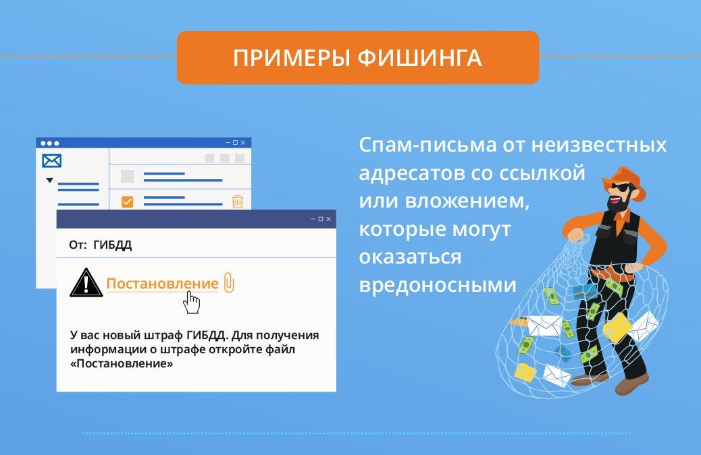

Как работает фишинг?

Главный метод этого вида — подмена сайта. Хакер создает страницу, практически не отличимую от сайта крупного бренда или компании. Вы используете свою учетную запись для входа, и злоумышленник получает доступ к реальному аккаунту.
Хакеры либо присылают ссылку через email, либо перенаправляют пользователей на поддельный сайт. Злоумышленники взламывают систему доменных имен (DNS), и когда пользователь хочет зайти на сайт, сервер открывает страницу-подделку.
У веб-фишинга несколько вариаций.
•Фишинг через поисковые системы. Такие мошенники таргетируются на людей, желающих что-то купить: их просят ввести конфиденциальную информацию, которую перехватывает хакер.
•«Атака на водопое». Хакеры выясняют, какие сайты часто посещают сотрудники компании, и подменяют адрес или добавляют к нему вредоносный код для скачивания.
•Всплывающие окна или уведомления веб-браузера. Когда человек кликает на кнопку «разрешить», на устройство загружается вредоносный код.
Перейдя по фишинговой ссылке вы рискуете получить вирус шпион , кейлогер или троян, так мошенники получат доступ не к одному вашему аккаунту , а ко всем и сразу , необнаружив во время угрозу вы сами будете долгое время передавать все свои персональные данные мошенникам